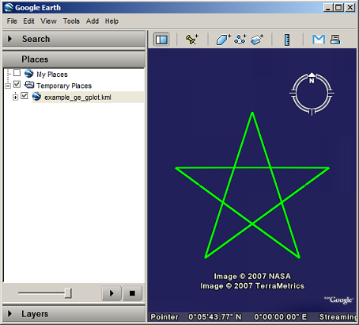

Visualization of point connectivity in 2D space.
Visualization of point connectivity in 2D space.

| kmlStr = ge_gplot(A,V) |
| kmlStr = ge_gplot(A,V,Parameter,Value) |
| kmlStr = ge_gplot(A,V) |
Generates a kml character array used for visualizing the connectivity between points in a plane parallel to the Earth's surface. Input variable "A" contains the connectivity matrix between points. If there are N points, "A" should thus be NxN. Variable "V" contains the Cartesian coordinates of all points (the so-called vertices). "V" must be Nx2, with N equal to the number of points.
| kmlStr = ge_gplot(A,V,Parameter,Value) |
In addition to the above, a number of options can be set regarding the appearance of the gplot. Assigning values to the parameters can be accomplished by inclusion of an alternating sequence of parameters and their value. The table below provides an overview of the authorized options. The order in which the parameters are included does not matter. Please be aware that the options are case-sensitive. Examples are provided further down.
| Parameter | Description |
| 'altitude' | The altitude at which the object is located can be specified in this parameter. Altitudes are interpreted differently depending on the value of parameter 'altitudeMode'. |
| 'altitudeMode' | Character array used in interpreting the position of objects along the vertical axis. Value can be one of 'clampToGround', 'relativeToGround', or 'absolute'. |
| 'description' | A description of the object can be included using this parameter. Its value must be passed as a character array. Including a description will cause a text balloon to pop up from the map at the object's location. This balloon contains the character array included in 'description'. |
| 'extrude' | See Extruding objects. |
| 'forceAsLine' | When lines do not end at the location where they started, they are sometimes automatically connected by the OpenGL renderer when displayed in the Google Earth Viewer. By setting this parameter to true, this is avoided by plotting lines from start to end and back. This will force all lines to end at their starting point. Note that this will increase file size. Default is true. |
| 'lineColor' | Line color specification, including transparency. Color value format must be passed as a character array according to the format string 'TTRRGGBB', with 'TT' representing transparency; 'RR', 'GG', and 'BB' representing red, green, and blue colors, respectively. Intensity values are denoted as two-digit hexadecimal numbers ranging from 00 to FF. For example, '80FF0000' is semi-transparent red and 'FF0000FF' is fully opaque blue. |
| 'lineWidth' | Line width specification. Must be passed as a 1x1 numerical array. |
| 'msgToScreen' | Defines whether verbose feedback is provided by the function when it is accessed and when it finishes. Default is false (which is equivalent to logical(0), but quicker). |
| 'name' | Character array with the name of the object. |
| 'snippet' | A short description of the feature. In Google Earth, this description is displayed in the Places panel under the name of the feature. If a Snippet is not supplied, the first two lines of the description are used |
| 'tessellate' | See Tessellation. |
| 'timeSpanStart' | See Dynamic visualization. |
| 'timeSpanStop' | See Dynamic visualization. |
| 'visibility' | Defines whether the object is visible. Must be passed as numerical value 1 or 0. |
Latitudes on the Southern hemisphere and longitudes on the Western hemisphere must be passed as negative values.
Some transformation may occur due to the projection.
Latitudes and longitudes should be passed in units of decimal degrees (also known as fractional degrees). Google Earth uses Simple Cylindrical projection (also known as Plate Carée) with a WGS84 datum. Altitudes are in meters.
See the demo file demo_ge_gplot for more details.
angleRad = linspace(0,(4/5)*2*pi,5)'; X = sin(angleRad); Y = cos(angleRad); V = [X,Y]; A = [0,0,1,1,0;... 0,0,0,1,1;... 1,0,0,0,1;... 1,1,0,0,0;... 0,1,1,0,0]; kmlStr = ge_gplot(A,V,'lineWidth',5.0,... 'lineColor','FF00FF00'); ge_output('example_ge_gplot.kml',kmlStr);
The above lines of code will display as follows when viewed in Google Earth:
